🌫️ 无双对决：雾都？
Unmatched: Cobble & Fog · 设计：Rob Daviau · Restoration Games 出版 · 2 人 · 官方英文规则书全文翻译（11 页 · AI 辅助机翻）
本页收录《无双对决：雾都？》（Unmatched: Cobble & Fog, 2020）的原版官方规则书全部 11 页（底本：Restoration Games 官网商店页（shop/cobble-fog-unmatched）规则链接，UM-Cobble_and_Fog-rules-two-page.pdf），逐页随图排列，点击任意图片即可放大查看；每页下方默认折叠了该页的 AI 辅助中文机翻对照，需要时可展开。规则内容归 Restoration Games 及版权方所有，收录仅供个人学习查阅。
整理说明：机翻对照按本站术语口径对齐（牌库/手牌/回合/轮/板块/指示物等），PDF 图文混排页的语序可能与原书视觉顺序略有出入；规则细节请一律以页面上方原书页面为准。
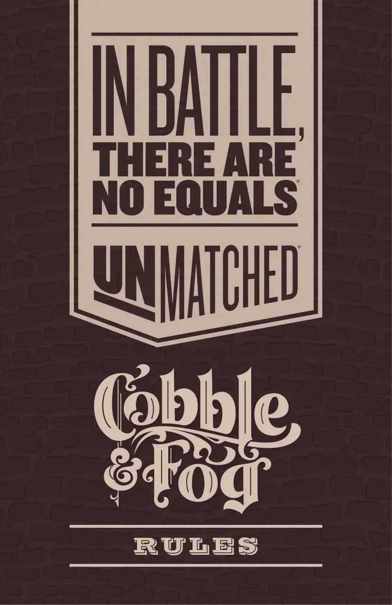
📝 第 1 页 AI 机翻对照（点击展开）
规则
规则
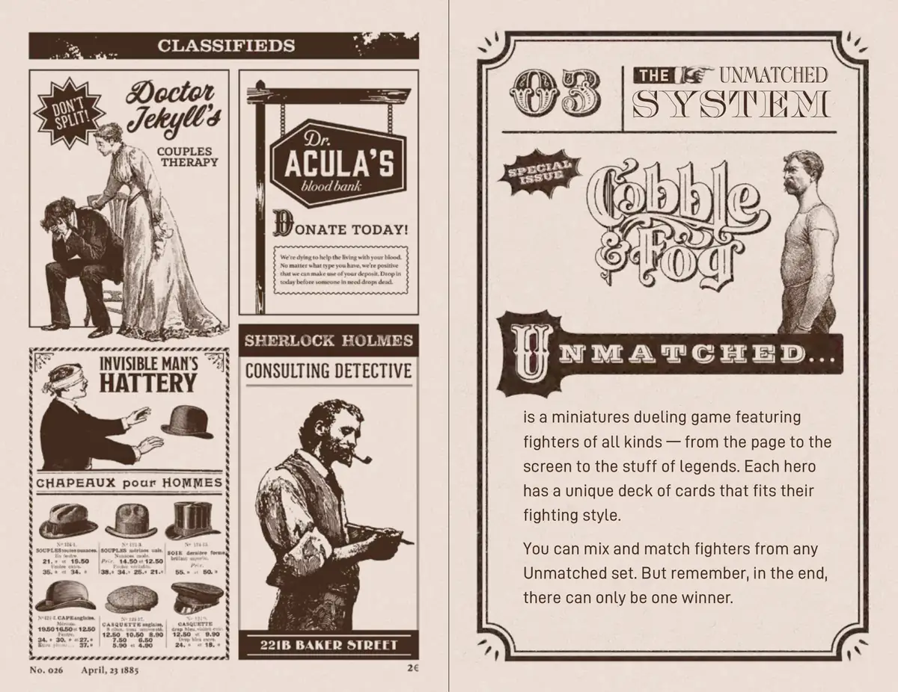
📝 第 2 页 AI 机翻对照（点击展开）
不相匹敌
系统
不相匹敌
系统
是一款微模型对战游戏， featuring
是一款微模型对战游戏， featuring
各种类型的战士
各种类型的战士 — 从书页到
从书页到
银幕再到传奇传说。每位英雄
银幕再到传奇传说。每位英雄
都有符合其
都有符合其
战斗风格的独特卡牌库。
战斗风格的独特卡牌库。
你可以混合搭配任何
你可以混合搭配任何
不相匹敌系列中的战士。但请记住
不相匹敌系列中的战士。但请记住，最终
最终，
只能有一个获胜者。
只能有一个获胜者。
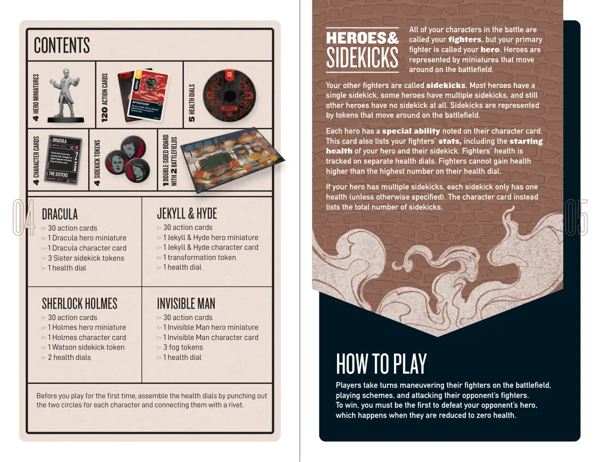
📝 第 3 页 AI 机翻对照（点击展开）
在你第一次游戏前，通过打孔出每个角色的两个圆圈，并用铆钉将它们连接起来，组装生命值盘。
4 个英雄模型
5 个生命值盘
4 个伙伴指示物
4 个角色卡牌
你在战斗中的所有角色都被称为你的战士，但你的主要战士被称为你的英雄。英雄由在战场上移动的模型代表。
英雄与伙伴
你的其他战士被称为伙伴。大多数英雄有一个伙伴，一些英雄有多个伙伴，还有一些英雄根本没有伙伴。伙伴由在战场上移动的指示物代表。
每个英雄都有其角色卡上注明的特殊能力。这张卡还列出了你的战士的属性，包括你的英雄及其伙伴的初始生命值。战士的生命值在单独的生命值盘上追踪。战士的生命值不能超过其生命值盘上的最高数值。
如果你的英雄有多个伙伴，每个伙伴只有一个生命值（除非另有说明）。角色卡 instead 列出了伙伴的总数。
如何游戏
玩家轮流在战场上操控他们的战士，执行计划，并攻击对手的战士。
要获胜，你必须首先击败对手的英雄，当他们的生命值降至零时，就会发生这种情况。
内容物
120 张行动卡
1 张双面版图
包含 2 个战场
夏洛克·福尔摩斯
30 张行动卡
1 个福尔摩斯英雄模型
1 张福尔摩斯角色卡
1 个华生伙伴指示物
2 个生命值盘
德古拉
30 张行动卡
1 个德古拉英雄模型
1 德古拉角色卡
3 姐妹助手指示物
1 生命值轮盘
德古拉
德古拉
血之洗礼
血之洗礼
恢复2点生命值。将一名被击败的
恢复2点生命值。将一名被击败的
姐妹（如果有）返回到德古拉区域
姐妹（如果有）返回到德古拉区域
内的任意空间。
内的任意空间。
德古拉
德古拉 | x2
x2
杰基尔与海德
30张行动卡
1个杰基尔与海德英雄模型
1张杰基尔与海德角色卡
1个变形指示物
1个生命值轮盘
隐形人
30张行动卡
1个隐形人英雄模型
1张隐形人角色卡
3个雾气指示物
1个生命值轮盘
近战
姐妹们
德古拉
移动
近战
X3
在你的回合开始时，
你可以对与德古拉相邻的
斗士造成1点伤害。
如果你这样做，摸一张牌。
开始
生命值
特殊能力
助手
攻击
开始
生命值
英雄
攻击
德古拉
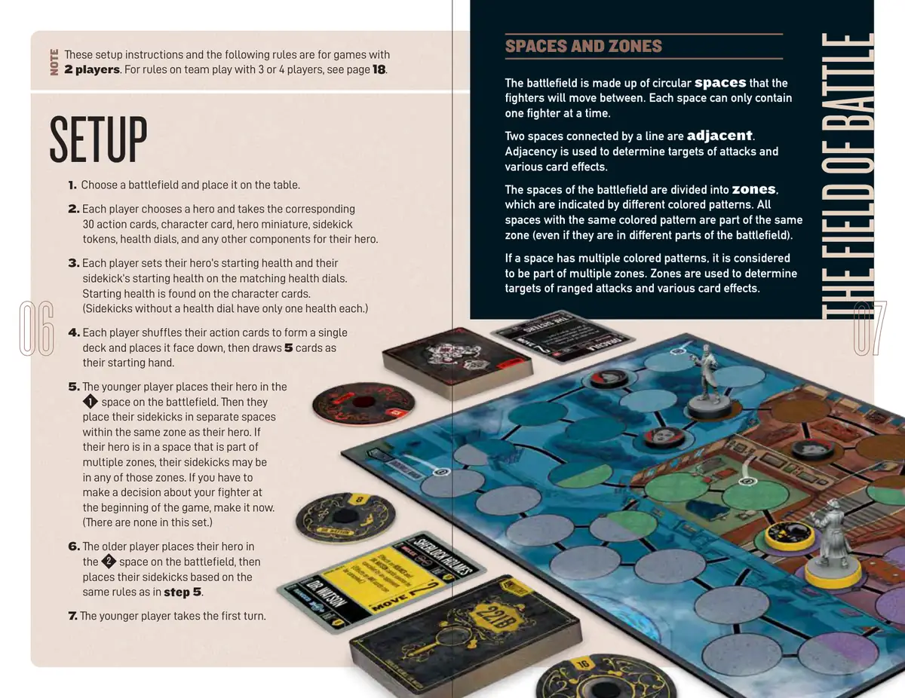
📝 第 4 页 AI 机翻对照（点击展开）
战场
这些设置说明和以下规则适用于
2名玩家的游戏。关于3人或4人团队游戏的规则，请参见第18页。
设置
格子和区域
战场由圆形格子组成
战场由圆形格子组成，战士们将在这些格子之间移动。每个格子一次只能容纳
战士们将在这些格子之间移动。每个格子一次只能容纳
一名战士。
一名战士。
由线条连接的两个格子是
由线条连接的两个格子相邻
相邻。
相邻关系用于确定攻击目标和
相邻关系用于确定攻击目标和
各种卡牌效果。
各种卡牌效果。
战场的格子被划分为
战场的格子被划分为区域
区域，，
由不同的彩色图案表示。所有
由不同的彩色图案表示。所有
具有相同彩色图案的格子都属于同一
具有相同彩色图案的格子都属于同一
区域（即使它们位于战场的不同部分）。
区域（即使它们位于战场的不同部分）。
如果一个格子有多个彩色图案，它被视为
如果一个格子有多个彩色图案，它被视为
属于多个区域。区域用于确定
属于多个区域。区域用于确定
远程攻击的目标和各种卡牌效果。
远程攻击的目标和各种卡牌效果。
注意事项
- 选择一个战场并将其放在桌上。
2. 每位玩家选择一个英雄，并获取对应的
30张行动卡、角色卡、英雄模型、伙伴
指示物、生命值轮盘以及英雄的其他所有组件。
- 每位玩家在对应的生命值轮盘上设置其英雄的起始生命值和伙伴的起始生命值。
起始生命值可在角色卡上找到。
（没有生命值轮盘的伙伴每个只有一点生命值。）
4. 每位玩家洗混其行动卡，组成一个牌库，面朝下放置，然后抽取5张作为起始手牌。
5. 年轻的玩家将其英雄放置在战场上的
1号格子上。然后将其伙伴放置在与英雄同一区域的不同格子中。如果
其英雄位于一个属于多个区域的格子中，其伙伴可以位于
这些区域中的任何一个。如果你需要在游戏开始时决定关于你战士的事项，现在就做。
（本套中没有这种情况。）
6. 年长的玩家将其英雄放置在战场上的
2号格子上，然后根据与第5步相同的规则放置其伙伴。
- 年轻的玩家先手。
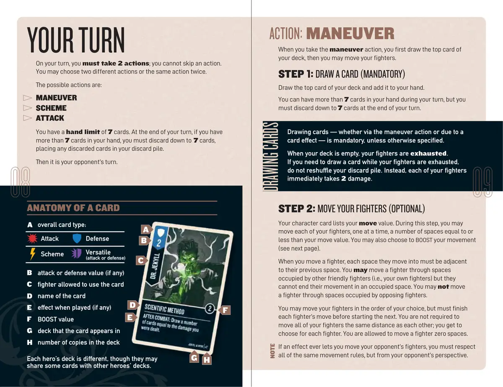
📝 第 5 页 AI 机翻对照（点击展开）
A 卡牌整体类型：
卡牌整体类型：
攻击
攻击
防御
防御
阴谋
阴谋
多功能
多功能
（攻击或防御）
（攻击或防御）
B 攻击或防御值（如有）
攻击或防御值（如有）
C 允许使用该卡牌的战士
允许使用该卡牌的战士
D 卡牌名称
卡牌名称
E 打出时的效果（如有）
打出时的效果（如有）
F 强化值
强化值
G 该卡牌出现的牌库
该卡牌出现的牌库
H
H 牌库中的副本数量
牌库中的副本数量
每位英雄的牌库都不同，尽管他们可能
每位英雄的牌库都不同，尽管他们可能
与其他英雄的牌库共享一些卡牌。
与其他英雄的牌库共享一些卡牌。
当你执行机动行动时，你先从牌库顶摸一张牌，
然后你可以移动你的战士。
第1步：摸牌（强制）
从你的牌库顶摸一张牌并将其加入你的手牌。
在你的回合中，你可以拥有超过7张手牌，但你
必须在你的回合结束时弃牌至7张手牌。
卡牌结构
在你的回合中，你必须执行2个行动；你不能跳过行动。
你可以选择两个不同的行动或同一个行动执行两次。
可能的行动有：
机动
阴谋
攻击
你的手牌上限为7张。在你的回合结束时，如果你的手牌超过7张，
你必须弃牌至7张，将任何被弃的牌放入你的弃牌堆。
然后轮到你的对手回合。
你的回合
摸牌
第2步：移动你的战士（可选）
你的角色卡列出了你的移动值。在此步骤中，你可以
移动你的每个战士，一次一个，移动的距离等于或小于
你的移动值。你也可以选择强化你的移动
（见下一页）。
当你移动一个战士时，他们移动到的每个空间必须
与他们之前的空间相邻。你可以让一个战士穿过
被其他友方战士（即你自己的战士）占据的空间，
但他们不能在已占据的空间结束移动。你不能
让一个战士穿过被敌方战士占据的空间。
你可以按你选择的顺序移动你的战士，但必须
完成一个战士的移动后才能开始下一个。你不必
将所有战士移动相同的距离；你可以为每个战士
单独选择。你可以选择让一个战士移动零格。
如果有效果让你可以移动对手的战士，你必须遵守
所有相同的移动规则，但从对手的角度来看。
注意
行动：机动
摸牌——无论是通过机动行动还是由于卡牌效果——是
强制性的，除非另有说明。
摸牌——无论是通过机动行动还是由于卡牌效果——是
强制性的，除非另有说明。
当你的牌库为空时，你的战斗机就
当你的牌库为空时，你的战斗机就耗尽了。
耗尽了。
如果你需要在战斗机耗尽时摸牌，
如果你需要在战斗机耗尽时摸牌，
不要洗混你的弃牌堆。相反，你的每架战斗机
不要洗混你的弃牌堆。相反，你的每架战斗机
立即承受
立即承受2点伤害。
伤害。
A
B
C
D
E
G H
F
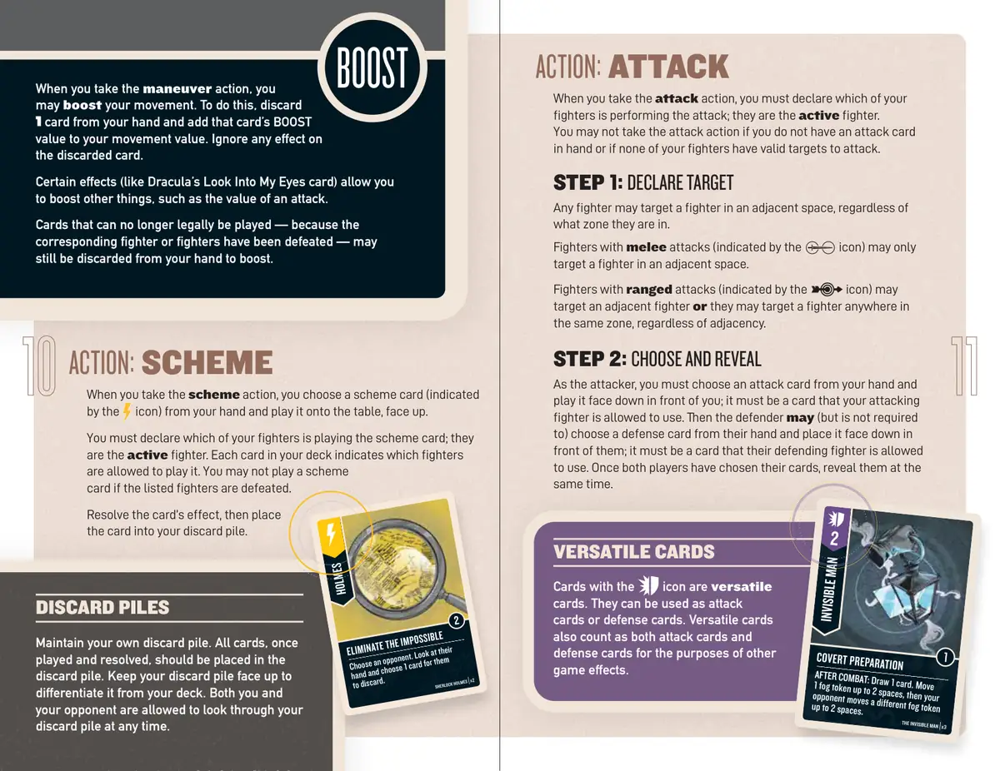
📝 第 6 页 AI 机翻对照（点击展开）
当你执行策略行动时，从你的手牌中选择一张策略卡（由 图标表示）并将其正面朝上打出至桌面。你必须声明哪位你的战士正在打出策略卡；他们是活跃战士。你牌库中的每张卡牌都指明了哪些战士可以打出它。如果列出的战士已被击败，你不得打出策略卡。解析卡牌效果，然后将这张牌放入你的弃牌堆。
当你执行机动行动时，你可以增强你的移动。为此，弃掉你手牌中的一张牌，并将该牌的 BOOST 值加到你的移动值上。忽略被弃掉牌上的任何效果。
某些效果（例如德古拉的直视我双眼卡牌）允许你增强其他事物，例如攻击值。
由于相应战士已被击败而无法合法打出的卡牌，仍可以从你的手牌中弃掉以用于增强。
行动：策略
增强值
当你执行攻击行动时，你必须声明哪位你的战士正在执行攻击；他们是活跃战士。如果你手中没有攻击卡牌，或者你的战士没有有效的攻击目标，你不得执行攻击行动。
步骤1：声明目标
任何战士都可以瞄准相邻空间中的战士，无论他们处于哪个区域。
拥有近战攻击的战士（由 图标表示）只能瞄准相邻空间中的战士。
拥有远程攻击的战士（由 图标表示）可以瞄准相邻战士，或者瞄准同一区域中的任何战士，无论是否相邻。
步骤2：选择并揭示
作为攻击者，你必须从你的手牌中选择一张攻击牌并正面朝下放在你面前；它必须是你的攻击战士可以使用的卡牌。然后防御者可以（但非必须）从他们的手牌中选择一张防御牌并正面朝下放在他们面前；它必须是他们的防御战士可以使用的卡牌。一旦双方玩家都选择了他们的卡牌，同时揭示它们。
行动：攻击
保持你自己的弃牌堆。所有卡牌，一旦打出并解析后，应被放置在
弃牌堆。将你的弃牌堆正面朝上放置，以将其与你的牌库区分开来。你和你的对手都可以随时查看你的弃牌堆。
弃牌堆
万能卡牌
隐形人
秘密准备
秘密准备
战斗后：
摸1张牌。将1个迷雾指示物移动最多2个格，然后你的对手移动一个不同的迷雾指示物最多2个格。
隐形人 | x3
福尔摩斯
排除不可能
选择一个对手。查看他们的手牌，并为他们选择1张卡牌进行弃置。
夏洛克·福尔摩斯 | x2
带有图标的卡牌是万能卡牌。它们可以用作攻击卡牌或防御卡牌。万能卡牌在其他游戏效果的目的下，也同时算作攻击卡牌和防御卡牌。
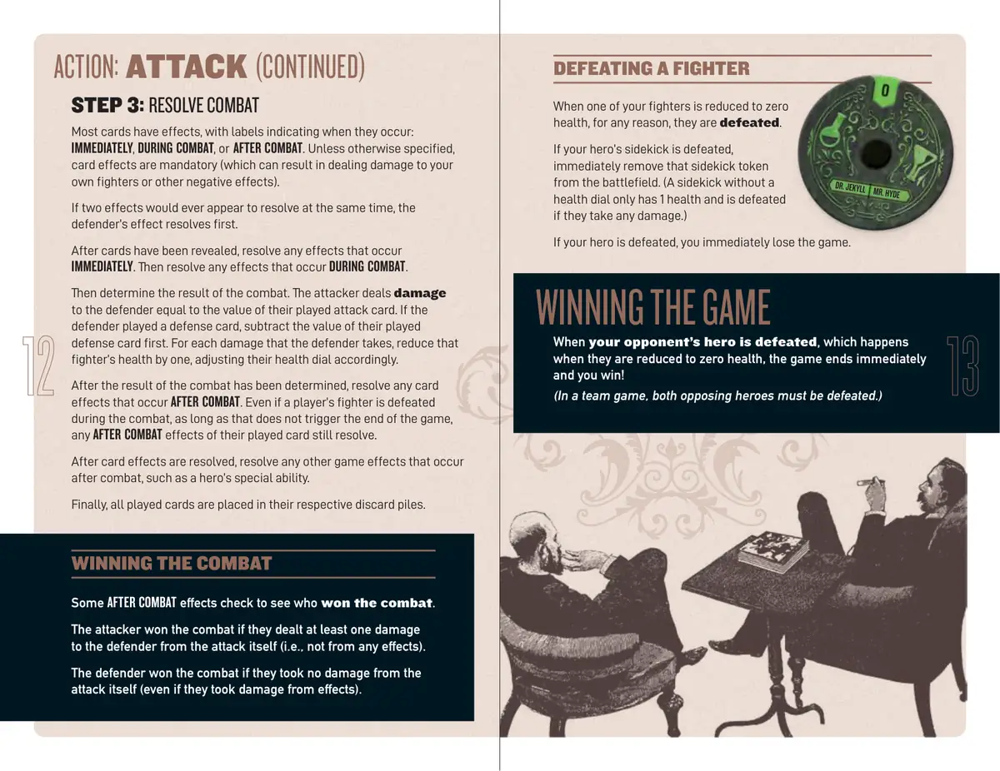
📝 第 7 页 AI 机翻对照（点击展开）
步骤3：解决战斗
大多数卡牌都有效果，带有标签指示它们发生的时间：立即、战斗中或战斗后。除非另有说明，卡牌效果是强制性的（这可能导致对你自己的战斗者造成伤害或其他负面效果）。
如果两个效果似乎需要同时解决，防御者的效果先解决。
卡牌被揭示后，解决任何立即发生的效果。然后解决任何战斗中发生的效果。然后确定战斗结果。攻击者对防御者造成伤害，伤害值等于他们打出的攻击牌的数值。如果防御者打出了防御牌，先减去他们打出的防御牌的数值。防御者每受到一点伤害，将该战斗者的生命值减一，相应地调整他们的生命值盘。
战斗结果确定后，解决任何战斗后发生的卡牌效果。即使玩家的战斗者在战斗中被击败，只要这不触发游戏结束，他们打出的卡牌的任何战斗后效果仍然会解决。
卡牌效果解决后，解决任何其他战斗后发生的游戏效果，例如英雄的特殊能力。
最后，所有打出的卡牌都被放入各自的弃牌堆中。
行动：攻击（续）
赢得战斗
有些战斗后效果会检查谁赢得了战斗。
如果攻击者从攻击本身（即不是从任何效果）对防御者造成了至少一点伤害，则攻击者赢得了战斗。
如果防御者从攻击本身（即使他们从效果中受到了伤害）没有受到任何伤害，则防御者赢得了战斗。
当你的战斗者因任何原因生命值降至零时，他们被击败。
如果你的英雄的伙伴被击败，立即将该伙伴指示物从战场上移除。（没有生命值盘的伙伴只有1点生命值，如果受到任何伤害就会被击败。）
如果你的英雄被击败，你立即输掉游戏。
当你的对手的英雄被击败（当他们生命值降至零时发生），游戏立即结束，你获胜！
（在团队游戏中，必须击败两个敌方英雄。）
击败战斗者
赢得游戏
杰基尔博士 海德先生
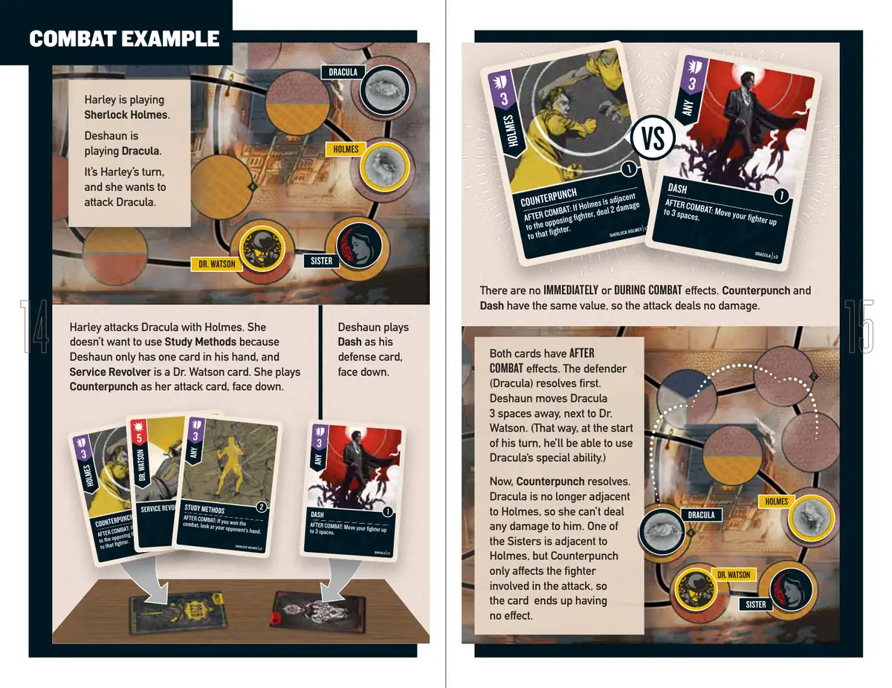
📝 第 8 页 AI 机翻对照（点击展开）
姐妹
华生医生
德古拉
福尔摩斯
哈莉正在扮演
福尔摩斯
福尔摩斯。
德肖恩正在扮演
德古拉
德古拉。
轮到哈莉了，
她想攻击德古拉。
两张卡牌都有
战斗后效果。防御方
（德古拉）先结算。
德肖恩将德古拉
移动3格，靠近
华生医生旁边。（这样，
在他的回合开始时，
他就能使用德古拉的
特殊能力。）
现在，反击
反击结算。
德古拉不再与福尔摩斯相邻，
所以她无法对他造成任何伤害。
其中一位姐妹与福尔摩斯相邻，
但反击
只影响参与攻击的
战士，所以这张卡牌
最终没有效果。
没有立即或战斗中效果。反击
反击和
闪避
闪避具有相同数值，因此攻击未造成伤害。
德肖恩将
闪避
闪避作为他的
防御卡牌，面朝下打出。
哈莉用福尔摩斯攻击德古拉。她
不想使用研究方法
研究方法，因为
德肖恩手中只有一张牌，而且
服务左轮
服务左轮是一张华生医生的卡牌。她打出
反击
反击作为她的攻击卡牌，面朝下。
福尔摩斯
德古拉
华生医生
姐妹
战斗示例
福尔摩斯
福尔摩斯
反击
反击
战斗后：
战斗后：如果福尔摩斯与敌方
如果福尔摩斯与敌方
战士相邻，对该战士造成2点伤害
战士相邻，对该战士造成2点伤害
。
福尔摩斯
福尔摩斯 | x3
x3
任意
任意
闪避
闪避
战斗后：
战斗后：将你的战士
将你的战士
移动最多3格。
移动最多3格。
德古拉
德古拉 | x3
x3
VS
福尔摩斯
福尔摩斯
反击
反击
战斗后：
战斗后：如果福尔摩斯与敌方
如果福尔摩斯与敌方
战士相邻，对该战士造成2点伤害
战士相邻，对该战士造成2点伤害
。
福尔摩斯
福尔摩斯 | x3
x3
华生医生
华生医生
服务左轮
服务左轮
福尔摩斯
福尔摩斯 | x2
x2
任意
任意
研究方法
研究方法
战斗后：
战斗后：如果你赢得了
如果你赢得了
战斗，查看对手的手牌。
战斗，查看对手的手牌。
福尔摩斯
福尔摩斯 | x2
x2
任意
任意
闪避
闪避
战斗后：
战斗后：将你的战士
将你的战士
移动最多3格。
移动最多3格。
德古拉
德古拉 | x3
x3
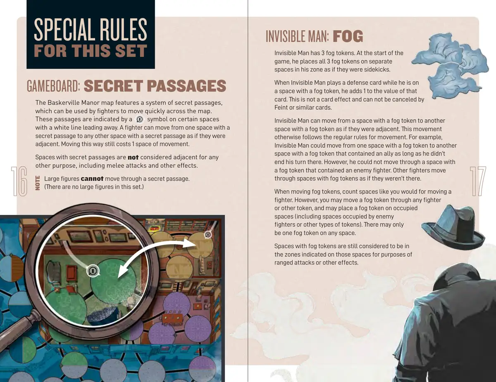
📝 第 9 页 AI 机翻对照（点击展开）
特殊规则
本套专属规则
游戏版图：秘密通道
巴斯克维尔庄园地图上有一个秘密通道系统，战士可以使用这些通道快速穿越地图。这些通道在特定格子上用
符号表示，并有一条白线引出。战士可以从一个有秘密通道的格子移动到任何其他有秘密通道的格子，就像它们相邻一样。这种方式移动仍然消耗1点移动力。
有秘密通道的格子不被视为相邻，用于任何其他目的，包括近战攻击和其他效果。
大型角色不能通过秘密通道。
（本套中没有大型角色。）
隐形人：迷雾
隐形人有3个迷雾指示物。游戏开始时，他将所有3个迷雾指示物放在他区域内的不同格子上，就像他们是随从一样。
当隐形人在有迷雾指示物的格子上打出防御卡时，他给该卡牌数值加1。这不是卡牌效果，不能被虚晃或类似卡牌取消。
隐形人可以从一个有迷雾指示物的格子移动到另一个有迷雾指示物的格子，就像它们相邻一样。这种移动 otherwise 遵循常规移动规则。例如，隐形人可以从一个有迷雾指示物的格子移动到另一个有迷雾指示物且包含盟友的格子，只要他不在此结束他的回合。然而，他不能穿过包含敌方战士的有迷雾指示物的格子。其他战士穿过有迷雾指示物的格子时，就像那里没有东西一样。
移动迷雾指示物时，计算空间就像移动战士一样。但是，你可以让迷雾指示物穿过任何战士或其他指示物，并且可以将迷雾指示物放在被占据的格子上（包括被敌方战士或其他类型指示物占据的格子）。任何格子上只能有一个迷雾指示物。
有迷雾指示物的格子仍然被认为位于这些格子上标示的区域中，用于远程攻击或其他效果的目的。
注意事项
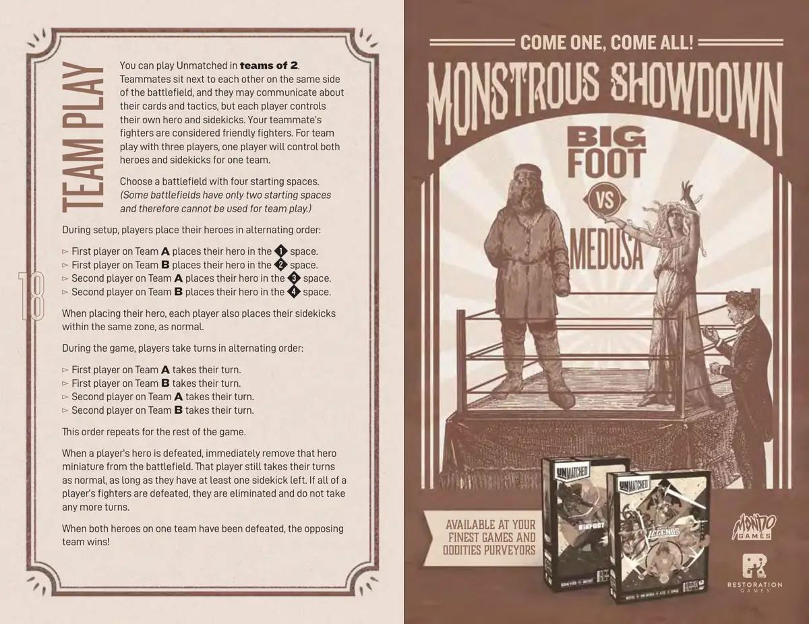
📝 第 10 页 AI 机翻对照（点击展开）
在您最好的
游戏与
奇物商店有售
你可以进行2人团队对战。
队友坐在战场同一侧相邻的位置，他们可以讨论自己的卡牌和战术，但每位玩家控制自己的英雄和伙伴。你队友的战斗单位被视为友方战斗单位。对于3人团队游戏，一位玩家将控制一个团队的所有英雄和伙伴。
选择一个有四个起始空间的战场。
（有些战场只有两个起始空间，因此不能用于团队游戏。）
在设置阶段，玩家按交替顺序放置他们的英雄：
A队第一位玩家将英雄放置在空间中。
B队第一位玩家将英雄放置在空间中。
A队第二位玩家将英雄放置在空间中。
B队第二位玩家将英雄放置在空间中。
放置英雄时，每位玩家也按正常规则在同一区域内放置他们的伙伴。
在游戏过程中，玩家按交替顺序进行回合：
A队第一位玩家进行他们的回合。
B队第一位玩家进行他们的回合。
A队第二位玩家进行他们的回合。
B队第二位玩家进行他们的回合。
这个顺序在游戏剩余部分重复进行。
当一位玩家的英雄被击败时，立即将该英雄模型从战场上移除。只要该玩家至少还有一个伙伴，他们仍然正常进行自己的回合。如果一位玩家的所有战斗单位都被击败，他们将被淘汰，不再进行任何回合。
当一个团队的所有英雄都被击败时，对方团队获胜！
团队游戏
来吧，都来吧！
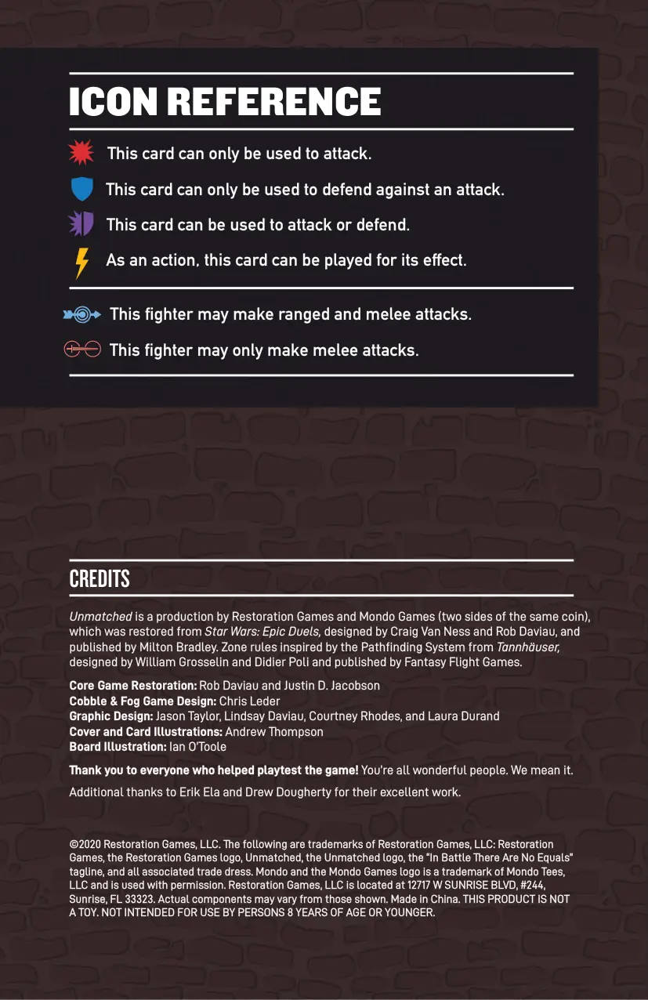
📝 第 11 页 AI 机翻对照（点击展开）
图标参考
这张卡牌只能用于攻击。
这张卡牌只能用于攻击。
这张卡牌只能用于防御攻击。
这张卡牌只能用于防御攻击。
这张卡牌可用于攻击或防御。
这张卡牌可用于攻击或防御。
作为一个行动，这张卡牌可以打出其效果。
作为一个行动，这张卡牌可以打出其效果。
这个战士可以进行远程和近战攻击。
这个战士可以进行远程和近战攻击。
这个战士只能进行近战攻击。
这个战士只能进行近战攻击。
©2020 Restoration Games, LLC. 以下为 Restoration Games, LLC 的商标：Restoration
©2020 Restoration Games, LLC. 以下为 Restoration Games, LLC 的商标：Restoration
Games, the Restoration Games logo, Unmatched, the Unmatched logo, the "In Battle There Are No Equals"
Games, the Restoration Games logo, Unmatched, the Unmatched logo, the "In Battle There Are No Equals"
标语，以及所有相关的贸易外观。Mondo 和 Mondo Games logo 是 Mondo Tees,
标语，以及所有相关的贸易外观。Mondo 和 Mondo Games logo 是 Mondo Tees,
LLC 的商标，经许可使用。Restoration Games, LLC 位于
LLC 的商标，经许可使用。Restoration Games, LLC 位于
12717 W SUNRISE BLVD, #244,
12717 W SUNRISE BLVD, #244,
Sunrise, FL 33323。 实际组件可能与所示有所不同。中国制造。 本产品不是
Sunrise, FL 33323。 实际组件可能与所示有所不同。中国制造。 本产品不是
玩具。不适用于 8 岁及以下人士。
玩具。不适用于 8 岁及以下人士。
制作人员
Unmatched 是由 Restoration Games 和 Mondo Games（同一枚硬币的两面）制作的产品，
它从 Star Wars: Epic Duels 恢复而来，由 Craig Van Ness 和 Rob Daviau 设计，
并由 Milton Bradley 出版。区域规则受 Tannhäuser 中的寻路系统启发，
由 William Grosselin 和 Didier Poli 设计，并由 Fantasy Flight Games 出版。
核心游戏恢复：Rob Daviau 和 Justin D. Jacobson
Cobble & Fog 游戏设计：Chris Leder
平面设计：Jason Taylor, Lindsay Daviau, Courtney Rhodes, 和 Laura Durand
封面和卡牌插图：Andrew Thompson
版图插图：Ian O'Toole
感谢所有帮助测试游戏的人！你们都是了不起的人。我们是认真的。
额外感谢 Erik Ela 和 Drew Dougherty 的出色工作。